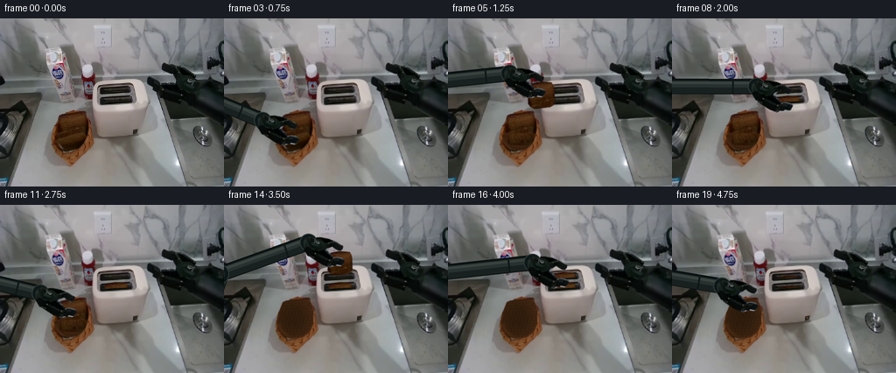
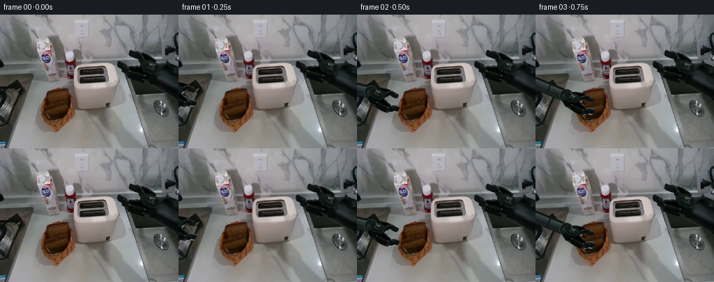
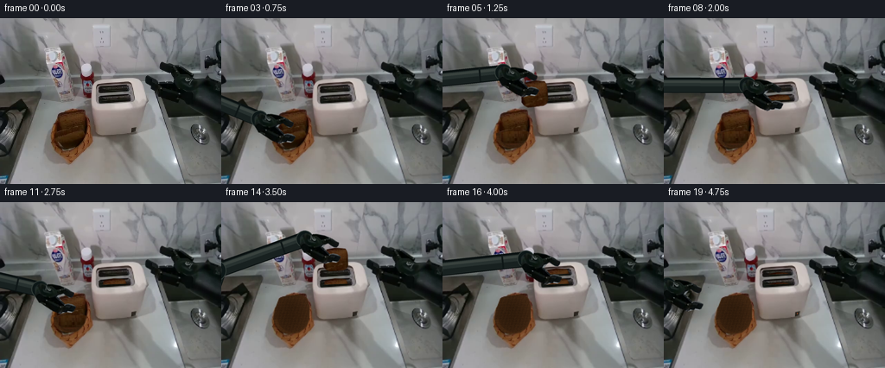
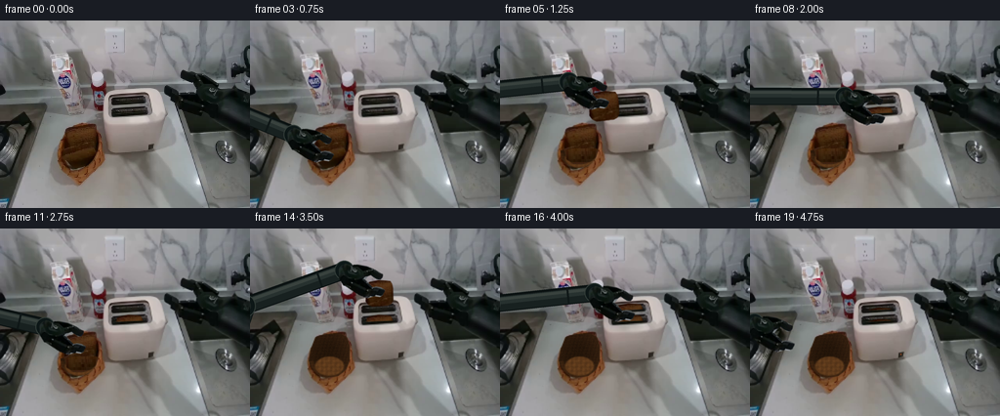
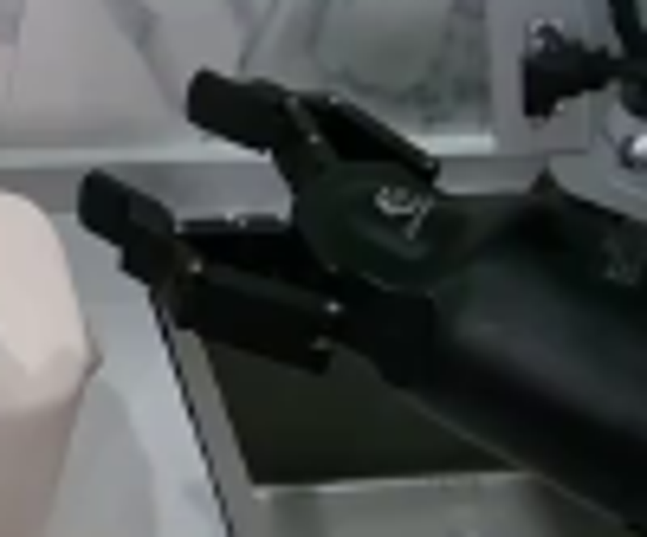
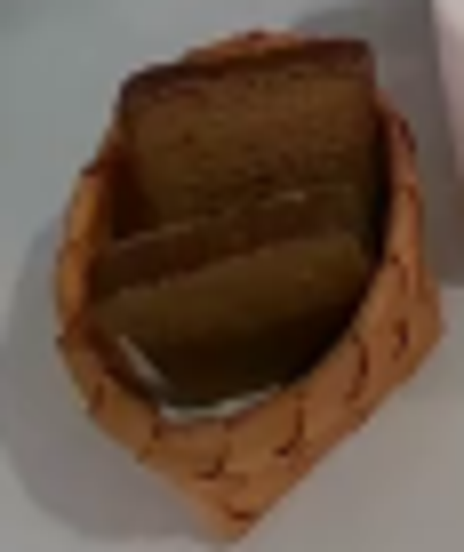
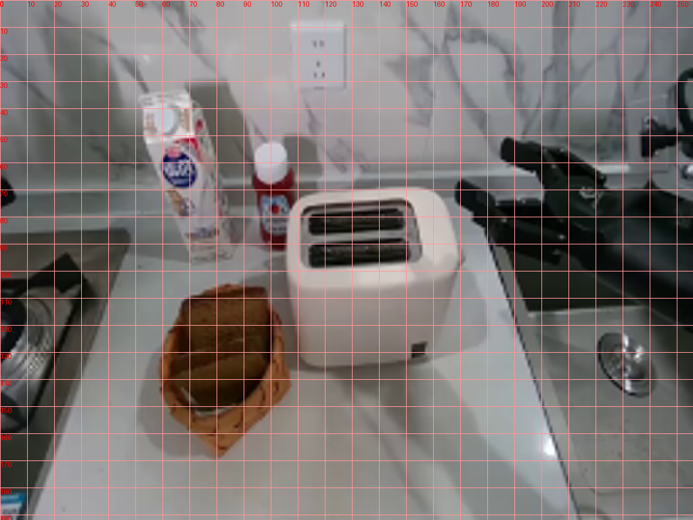
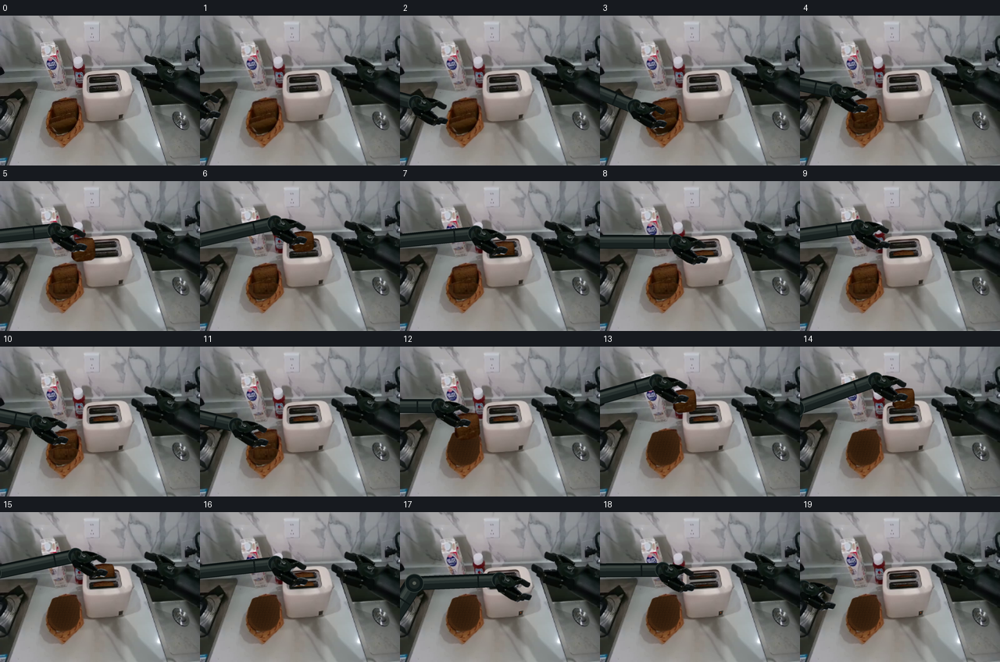
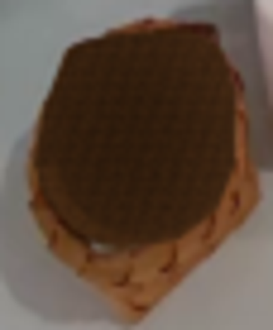

CODING AGENTS AS PIXEL WORLD MODELS
traex/GPT-6.1-Sol · common50_0002
点击播放 · 原生 RGB 像素
逐轮保存的候选
回放视频、检查图与代码变化。
每份候选均可单独播放。实际图片检查记录在下方工具轨迹中。
候选 01播放与检查图
点击播放 · 原生 RGB 像素


展开代码变化
--- 上一保存版本
+++ 本次保存版本
@@ -0,0 +1,216 @@
+from pathlib import Path
+import math
+import numpy as np
+from PIL import Image, ImageDraw, ImageFilter
+import artifact_io
+
+ROOT=Path(__file__).resolve().parent
+W,H=256,192
+S=4
+src=Image.open(ROOT/'first_frame.png').convert('RGB')
+orig=np.asarray(src).copy()
+rng=np.random.default_rng(113)
+
+def polygon_mask(points,size=(W,H)):
+ p=Image.new('L',(size[0]*S,size[1]*S))
+ ImageDraw.Draw(p).polygon([(x*S,y*S) for x,y in points],fill=255)
+ return p.resize(size,Image.Resampling.LANCZOS)
+
+def cutout(points):
+ im=src.convert('RGBA'); im.putalpha(polygon_mask(points)); return im
+
+# Source-material pieces of the rigid parallel-jaw end effector.
+palm=cutout([(199,62),(210,61),(219,66),(223,70),(231,74),(232,84),(224,93),(214,96),(205,91),(198,81)])
+upper=cutout([(187,51),(193,52),(201,54),(209,57),(219,63),(223,67),(221,73),(211,73),(200,66),(198,62),(188,61),(185,58),(185,54)])
+lower=cutout([(170,66),(176,67),(181,70),(184,74),(198,73),(204,76),(211,84),(214,90),(211,96),(191,93),(180,89),(177,84),(175,81),(169,77),(168,73)])
+
+# A basket interior uncovered as each real source-textured slice is removed.
+empty=src.copy()
+ys,xs=np.mgrid[0:H,0:W]
+interior_pts=[(65,116),(67,111),(78,108),(92,107),(99,111),(102,120),(102,135),(98,145),(90,151),(78,153),(68,149),(62,142),(60,135),(62,124)]
+inside=np.asarray(polygon_mask(interior_pts))/255.
+dist=((xs-81.5)/20.8)**2+((ys-129.5)/24.5)**2
+noise=rng.normal(0,1.6,(H,W))
+# Dark recessed weave lit from the upper left.
+weave=1.9*np.sin((xs+ys*.29)*1.6)+1.5*np.sin(ys*2.0)
+shade=np.clip(1-dist,0,1)*-12 + 8*(xs-70)/40
+basket=np.stack([57+shade+noise+weave,34+shade*.64+noise*.65+weave*.6,16+shade*.4+noise*.4+weave*.2],axis=-1)
+empty=Image.fromarray(np.uint8(np.clip(orig*(1-inside[:,:,None])+basket*inside[:,:,None],0,255)))
+# Preserve the real outer rim, with fine inner wicker strands.
+ov=Image.new('RGBA',(W*S,H*S));d=ImageDraw.Draw(ov)
+for i in range(5):
+ d.arc(((61+i*.8)*S,(108+i*1.2)*S,(104-i*.6)*S,(154-i*.8)*S),38,168,fill=(111-i*6,66-i*4,32-i*3,90),width=S//2)
+empty=Image.alpha_composite(empty.convert('RGBA'),ov.resize((W,H),Image.Resampling.LANCZOS)).convert('RGB')
+
+# Back slice, including the small previously occluded lower area.
+back_pts=[(66,114),(69,110),(77,108),(85,106),(97,106),(100,113),(100,132),(98,139),(94,144),(85,147),(75,147),(68,142),(65,131)]
+back_mask=np.asarray(polygon_mask(back_pts))/255.
+back_tex=orig.copy()
+for y in range(131,150):
+ for x in range(63,102):
+ sx=int(np.clip(x,69,96));sy=int(np.clip(120+(y-131)*.38,114,130))
+ back_tex[y,x]=orig[sy,sx]*max(.60,1-(y-131)*.018)
+# dark, rounded crust edges below the occlusion
+for y in range(132,149):
+ for x in range(64,102):
+ if back_mask[y,x] and (x<68 or x>97 or y>144):
+ back_tex[y,x]=np.array([62,35,16])+(rng.normal(0,2,3))
+back_only=np.uint8(np.clip(np.array(empty)*(1-back_mask[:,:,None])+back_tex*back_mask[:,:,None],0,255))
+# Only replace the front loaf; all other original pixels stay unchanged.
+front_pts=[(62,133),(69,132),(80,130),(91,127),(98,128),(100,133),(98,140),(93,146),(87,150),(77,151),(68,147),(63,142)]
+fmask=np.asarray(polygon_mask(front_pts))/255.
+back_only=np.uint8(orig*(1-fmask[:,:,None])+back_only*fmask[:,:,None])
+back_background=Image.fromarray(back_only)
+
+# Brown bread keeps photographic crumb, crust, and fine surface irregularity.
+BW,BH=40,40
+breadmask=polygon_mask([(3,12),(4,5),(8,3),(14,2),(19,1),(28,2),(34,3),(36,7),(37,13),(37,31),(34,36),(30,38),(10,39),(5,36),(2,31)],(BW,BH))
+base=src.crop((66,108,99,133)).resize((BW,BH),Image.Resampling.BICUBIC)
+tex=np.asarray(base).astype(float)
+by,bx=np.mgrid[:BH,:BW]
+# The original upper crust stays on top; side and lower crust are shaded.
+edge=np.clip(np.minimum.reduce([bx-2,37-bx,by-2,39-by]),0,4)/4
+crumb=tex*.91+np.array([5,2,0])
+crust=tex*np.array([.72,.61,.48])
+tex=crust*(1-edge[:,:,None])+crumb*edge[:,:,None]
+bread=Image.fromarray(np.uint8(np.clip(tex,0,255))).convert('RGBA');bread.putalpha(breadmask)
+# Front slice has its original foreshortened appearance as it leaves the basket.
+front_source=cutout(front_pts)
+
+def affine_sprite(sprite,linear,offset):
+ a=np.array(linear,dtype=float);inv=np.linalg.inv(a);off=-inv@np.array(offset)
+ return sprite.transform((W*S,H*S),Image.Transform.AFFINE,
+ (inv[0,0]/S,inv[0,1]/S,off[0],inv[1,0]/S,inv[1,1]/S,off[1]),
+ Image.Resampling.BICUBIC)
+
+def bread_sprite(cx,cy,scale=1,tilt=-4,flat=1,front=False):
+ ang=math.radians(tilt);r=np.array([[math.cos(ang),-math.sin(ang)],[math.sin(ang),math.cos(ang)]])
+ mat=r@np.diag([scale,scale*flat])
+ # Grip is near the top of the bread, not at the geometrical center.
+ anchor=np.array([20.,7.]);off=np.array([cx,cy])-mat@anchor
+ return affine_sprite(bread,mat,off)
+
+def stored_slice(slot,lower=0):
+ # Rear and front slots have separate toaster-carriage heights.
+ cx,sloty=(132.4,83.3) if slot=='rear' else (132.5,95.0)
+ top=sloty-8.2+lower
+ layer=bread_sprite(cx,top+5.5,scale=.81,tilt=-2,flat=.85)
+ ar=np.asarray(layer).copy(); yy=np.arange(H*S)[:,None]/S;xx=np.arange(W*S)[None,:]/S
+ cutoff=sloty-.04*(xx-cx)
+ ar[:,:,3]=np.uint8(ar[:,:,3]*np.clip((cutoff-yy)*S,0,1))
+ return Image.fromarray(ar)
+
+def moving_bread(cx,cy,scale,tilt,flat,slot=None):
+ layer=bread_sprite(cx,cy,scale,tilt,flat)
+ if slot:
+ sloty=83.3 if slot=='rear' else 95.0
+ ar=np.asarray(layer).copy();yy=np.arange(H*S)[:,None]/S;xx=np.arange(W*S)[None,:]/S
+ cutoff=sloty-.04*(xx-132.5)
+ ar[:,:,3]=np.uint8(ar[:,:,3]*np.clip((cutoff-yy)*S,0,1))
+ layer=Image.fromarray(ar)
+ return layer
+
+# Articulated arm: fixed link lengths, revolute elbow, and unchanging hand geometry.
+shoulder=np.array([-39.,179.]);L1=105.;L2=109.
+def elbow_for(wrist):
+ delta=wrist-shoulder;dist=np.linalg.norm(delta);unit=delta/dist
+ along=(L1*L1-L2*L2+dist*dist)/(2*dist)
+ high=math.sqrt(max(0,L1*L1-along*along))
+ # upper branch gives an anatomically consistent arm arriving from the left.
+ return shoulder+unit*along+np.array([-unit[1],unit[0]])*(-high)
+
+def capsule(draw,a,b,width,color):
+ aa=tuple(a*S);bb=tuple(b*S);r=width*S/2
+ draw.line((aa,bb),fill=color,width=int(width*S))
+ for x,y in [aa,bb]:draw.ellipse((x-r,y-r,x+r,y+r),fill=color)
+
+def robot(cx,cy,closed=1,angle=42):
+ theta=math.radians(angle);rot=np.array([[math.cos(theta),-math.sin(theta)],[math.sin(theta),math.cos(theta)]])
+ linear=rot@np.diag([-.81,.81]); anchor=np.array([181.5,64.5])
+ wrist=np.array([cx,cy])+linear@(np.array([226.,81.])-anchor)
+ elbow=elbow_for(wrist)
+ arm=Image.new('RGBA',(W*S,H*S));d=ImageDraw.Draw(arm)
+ for a,b,width in [(shoulder,elbow,23),(elbow,wrist,18)]:
+ # Parallel axial highlights follow the rigid cylindrical housings.
+ capsule(d,a,b,width,(11,18,18,255))
+ v=b-a;norm=np.array([-v[1],v[0]])/np.linalg.norm(v)
+ for shift,ww,col in [(1.1,width-4,(24,33,32,255)),(-2.5,width*.44,(39,49,47,255)),(-4,width*.18,(57,66,62,255))]:
+ capsule(d,a+norm*shift,b+norm*shift,ww,col)
+ # Collar remains perpendicular to link, with subtle machined seams.
+ c=a*.25+b*.75
+ d.line((tuple((c-norm*width*.45)*S),tuple((c+norm*width*.45)*S)),fill=(15,23,23,255),width=2*S)
+ for center,r in [(elbow,12),(wrist,10)]:
+ x,y=center*S;r*=S
+ d.ellipse((x-r,y-r,x+r,y+r),fill=(13,23,23,255),outline=(49,59,55,255),width=S)
+ d.ellipse((x-r*.58,y-r*.58,x+r*.58,y+r*.58),fill=(29,37,35,255))
+ d.ellipse((x-r*.18,y-r*.18,x+r*.18,y+r*.18),fill=(85,91,83,255))
+ off=np.array([cx,cy])-linear@anchor
+ # The palm remains rigid; each jaw slides on its parallel rail.
+ arm=Image.alpha_composite(arm,affine_sprite(palm,linear,off))
+ shift=np.array([-.9,1.1])*closed
+ arm=Image.alpha_composite(arm,affine_sprite(upper,linear,off+linear@shift))
+ arm=Image.alpha_composite(arm,affine_sprite(lower,linear,off-linear@shift))
+ return arm
+
+# (jaw x, jaw y, closure, held slice, bread scale, angle, bread flatness)
+poses={
+1:(21,118,0,None,1,-6,.60),
+2:(56,126,0,None,1,-6,.60),
+3:(80,131,1,'first',1,-6,.60),
+4:(82,111,1,'first',.96,-6,.86),
+5:(106,77,1,'first',.88,-4,.92),
+6:(131.5,68,1,'first',.81,-2,.88),
+7:(132.5,81,1,'first',.81,-2,.88),
+8:(132.5,92,0,None,.81,-2,.88),
+9:(110,73,0,None,1,-4,1),
+10:(82,111,0,None,1,-5,1),
+11:(82,115,1,'second',.94,-5,1),
+12:(85,90,1,'second',.92,-5,1),
+13:(108,59,1,'second',.85,-3,.94),
+14:(132.4,57,1,'second',.81,-2,.88),
+15:(132.4,70,1,'second',.81,-2,.88),
+16:(132.4,80,0,None,.81,-2,.88),
+17:(156,81,0,None,1,-2,1),
+18:(163,101,1,None,1,-2,1),
+19:(93,107,0,None,1,-4,1),
+}
+
+frames=[orig]
+for i in range(1,20):
+ if i<4: bg=src
+ elif i<12: bg=back_background
+ else:bg=empty
+ frame=bg.resize((W*S,H*S),Image.Resampling.BICUBIC).convert('RGBA')
+ x,y,closed,held,scale,tilt,flat=poses[i]
+ # Both toasting cavities are left separate; the first loaf is placed before
+ # the hand returns to retrieve the second one.
+ bread_layers=[]
+ if i>=8:bread_layers.append(stored_slice('front',lower=4.5 if i>=18 else 0))
+ if i>=16:bread_layers.append(stored_slice('rear',lower=4.5 if i>=18 else 0))
+ if held and i not in (3,11):
+ slot='front' if held=='first' and i>=6 else ('rear' if held=='second' and i>=14 else None)
+ bread_layers.append(moving_bread(x,y,scale,tilt,flat,slot))
+ robot_layer=robot(x,y,closed)
+ # Soft local moving shadows preserve the fixed diffuse kitchen lighting.
+ shadow=Image.new('RGBA',(W*S,H*S))
+ for lay in bread_layers+[robot_layer]:
+ alpha=lay.getchannel('A')
+ alpha=alpha.transform(alpha.size,Image.Transform.AFFINE,(1,0,-5*S,0,1,-9*S),Image.Resampling.BILINEAR)
+ alpha=alpha.filter(ImageFilter.GaussianBlur(3*S)).point(lambda v:int(v*.095))
+ shade=Image.new('RGBA',alpha.size,(8,11,9,0));shade.putalpha(alpha)
+ shadow=Image.alpha_composite(shadow,shade)
+ # Shadows on the counter rather than the brightly lit wall.
+ shadow_arr=np.asarray(shadow).copy();shadow_arr[:73*S,:,3]=0;shadow=Image.fromarray(shadow_arr)
+ frame=Image.alpha_composite(frame,shadow)
+ for layer in bread_layers:frame=Image.alpha_composite(frame,layer)
+ frame=Image.alpha_composite(frame,robot_layer)
+ if i>=18:
+ # Small warm power indicator appears as carriage is depressed.
+ d=ImageDraw.Draw(frame)
+ d.ellipse((154*S,128*S,155.2*S,129.7*S),fill=(163,75,29,255))
+ frame=frame.resize((W,H),Image.Resampling.LANCZOS).convert('RGB')
+ frames.append(np.asarray(frame))
+
+frames=np.stack(frames).astype(np.uint8)
+assert np.array_equal(frames[0],orig)
+artifact_io.save(frames,ROOT)
候选 02播放与检查图
点击播放 · 原生 RGB 像素

展开代码变化
--- 上一保存版本
+++ 本次保存版本
@@ -170,9 +170,9 @@
14:(132.4,57,1,'second',.81,-2,.88),
15:(132.4,70,1,'second',.81,-2,.88),
16:(132.4,80,0,None,.81,-2,.88),
-17:(156,81,0,None,1,-2,1),
-18:(163,101,1,None,1,-2,1),
-19:(93,107,0,None,1,-4,1),
+17:(163,101,1,None,1,-2,1),
+18:(116,88,0,None,1,-2,1),
+19:(40,111,0,None,1,-4,1),
}
frames=[orig]
@@ -185,8 +185,8 @@
# Both toasting cavities are left separate; the first loaf is placed before
# the hand returns to retrieve the second one.
bread_layers=[]
- if i>=8:bread_layers.append(stored_slice('front',lower=4.5 if i>=18 else 0))
- if i>=16:bread_layers.append(stored_slice('rear',lower=4.5 if i>=18 else 0))
+ if i>=8:bread_layers.append(stored_slice('front',lower=4.5 if i>=17 else 0))
+ if i>=16:bread_layers.append(stored_slice('rear',lower=4.5 if i>=17 else 0))
if held and i not in (3,11):
slot='front' if held=='first' and i>=6 else ('rear' if held=='second' and i>=14 else None)
bread_layers.append(moving_bread(x,y,scale,tilt,flat,slot))
@@ -204,7 +204,7 @@
frame=Image.alpha_composite(frame,shadow)
for layer in bread_layers:frame=Image.alpha_composite(frame,layer)
frame=Image.alpha_composite(frame,robot_layer)
- if i>=18:
+ if i>=17:
# Small warm power indicator appears as carriage is depressed.
d=ImageDraw.Draw(frame)
d.ellipse((154*S,128*S,155.2*S,129.7*S),fill=(163,75,29,255))
候选 03播放与检查图
点击播放 · 原生 RGB 像素

展开代码变化
--- 上一保存版本
+++ 本次保存版本
@@ -34,7 +34,13 @@
# Dark recessed weave lit from the upper left.
weave=1.9*np.sin((xs+ys*.29)*1.6)+1.5*np.sin(ys*2.0)
shade=np.clip(1-dist,0,1)*-12 + 8*(xs-70)/40
-basket=np.stack([57+shade+noise+weave,34+shade*.64+noise*.65+weave*.6,16+shade*.4+noise*.4+weave*.2],axis=-1)
+basket=np.stack([45+shade+noise+weave,27+shade*.64+noise*.65+weave*.6,13+shade*.4+noise*.4+weave*.2],axis=-1)
+# Basket has a genuinely recessed oval base, not a bread-shaped flat patch.
+floor_dist=((xs-81)/15.8)**2+((ys-140.5)/10.5)**2
+floor_weight=np.clip((1-floor_dist)*4,0,1)
+floor_weave=5*np.sin(xs*1.35)+4*np.sin(ys*1.5)+3*np.sin((xs+ys)*.8)
+floor_tex=np.stack([92+floor_weave+noise,57+floor_weave*.65+noise*.7,27+floor_weave*.3+noise*.4],axis=-1)
+basket=basket*(1-floor_weight[:,:,None])+floor_tex*floor_weight[:,:,None]
empty=Image.fromarray(np.uint8(np.clip(orig*(1-inside[:,:,None])+basket*inside[:,:,None],0,255)))
# Preserve the real outer rim, with fine inner wicker strands.
ov=Image.new('RGBA',(W*S,H*S));d=ImageDraw.Draw(ov)
可观测工具轨迹
实际执行的命令与返回图片。
命令 1exit 0
/bin/bash -lc "ls -la && cat prompt.txt && printf '\\n---RULES---\\n' && cat GENERATION_RULES.md"
命令 2exit 0
/bin/bash -lc "cat task_spec.json && cat artifact_io.py && python - <<'PY'
from PIL import Image
im=Image.open('first_frame.png'); print(im.size); im.resize((1024,768)).save('.tmp/first_large.png')
PY"命令 3exit 0
/bin/bash -lc "python - <<'PY'
from PIL import Image
im=Image.open('first_frame.png'); im.crop((156,40,256,123)).resize((800,664)).save('.tmp/gripper.png'); im.crop((52,101,110,170)).resize((464,552)).save('.tmp/bread.png')
PY"命令 4exit 0
/bin/bash -lc "python - <<'PY'
from PIL import Image,ImageDraw
im=Image.open('first_frame.png').resize((1024,768)); d=ImageDraw.Draw(im)
for x in range(0,256,10):
d.line((x*4,0,x*4,768),fill=(255,150,150),width=1);d.text((x*4,0),str(x),fill='red')
for y in range(0,192,10):
d.line((0,y*4,1024,y*4),fill=(255,150,150),width=1);d.text((0,y*4),str(y),fill='red')
im.save('.tmp/grid.png')
PY"命令 5exit 0
/bin/bash -lc "python - <<'PY'
import numpy as np
from PIL import Image
im=np.array(Image.open('first_frame.png'))
for p in [(181,104),(190,105),(202,102),(210,108),(180,79),(168,62),(221,48),(176,51),(229,60)]:
print(p,im[p[1],p[0]])
PY"命令 6exit 0
/bin/bash -lc "cat > generate.py <<'PY'
from pathlib import Path
import math
import numpy as np
from PIL import Image, ImageDraw, ImageFilter
import artifact_io
ROOT=Path(__file__).resolve().parent
W,H=256,192
S=4
src=Image.open(ROOT/'first_frame.png').convert('RGB')
orig=np.asarray(src).copy()
rng=np.random.default_rng(113)
def polygon_mask(points,size=(W,H)):
p=Image.new('L',(size[0]*S,size[1]*S))
ImageDraw.Draw(p).polygon([(x*S,y*S) for x,y in points],fill=255)
return p.resize(size,Image.Resampling.LANCZOS)
def cutout(points):
im=src.convert('RGBA'); im.putalpha(polygon_mask(points)); return im
# Source-material pieces of the rigid parallel-jaw end effector.
palm=cutout([(199,62),(210,61),(219,66),(223,70),(231,74),(232,84),(224,93),(214,96),(205,91),(198,81)])
upper=cutout([(187,51),(193,52),(201,54),(209,57),(219,63),(223,67),(221,73),(211,73),(200,66),(198,62),(188,61),(185,58),(185,54)])
lower=cutout([(170,66),(176,67),(181,70),(184,74),(198,73),(204,76),(211,84),(214,90),(211,96),(191,93),(180,89),(177,84),(175,81),(169,77),(168,73)])
# A basket interior uncovered as each real source-textured slice is removed.
empty=src.copy()
ys,xs=np.mgrid[0:H,0:W]
interior_pts=[(65,116),(67,111),(78,108),(92,107),(99,111),(102,120),(102,135),(98,145),(90,151),(78,153),(68,149),(62,142),(60,135),(62,124)]
inside=np.asarray(polygon_mask(interior_pts))/255.
dist=((xs-81.5)/20.8)**2+((ys-129.5)/24.5)**2
noise=rng.normal(0,1.6,(H,W))
# Dark recessed weave lit from the upper left.
weave=1.9*np.sin((xs+ys*.29)*1.6)+1.5*np.sin(ys*2.0)
shade=np.clip(1-dist,0,1)*-12 + 8*(xs-70)/40
basket=np.stack([57+shade+noise+weave,34+shade*.64+noise*.65+weave*.6,16+shade*.4+noise*.4+weave*.2],axis=-1)
empty=Image.fromarray(np.uint8(np.clip(orig*(1-inside[:,:,None])+basket*inside[:,:,None],0,255)))
# Preserve the real outer rim, with fine inner wicker strands.
ov=Image.new('RGBA',(W*S,H*S));d=ImageDraw.Draw(ov)
for i in range(5):
d.arc(((61+i*.8)*S,(108+i*1.2)*S,(104-i*.6)*S,(154-i*.8)*S),38,168,fill=(111-i*6,66-i*4,32-i*3,90),width=S//2)
empty=Image.alpha_composite(empty.convert('RGBA'),ov.resize((W,H),Image.Resampling.LANCZOS)).convert('RGB')
# Back slice, including the small previously occluded lower area.
back_pts=[(66,114),(69,110),(77,108),(85,106),(97,106),(100,113),(100,132),(98,139),(94,144),(85,147),(75,147),(68,142),(65,131)]
back_mask=np.asarray(polygon_mask(back_pts))/255.
back_tex=orig.copy()
for y in range(131,150):
for x in range(63,102):
sx=int(np.clip(x,69,96));sy=int(np.clip(120+(y-131)*.38,114,130))
back_tex[y,x]=orig[sy,sx]*max(.60,1-(y-131)*.018)
# dark, rounded crust edges below the occlusion
for y in range(132,149):
for x in range(64,102):
if back_mask[y,x] and (x<68 or x>97 or y>144):
back_tex[y,x]=np.array([62,35,16])+(rng.normal(0,2,3))
back_only=np.uint8(np.clip(np.array(empty)*(1-back_mask[:,:,None])+back_tex*back_mask[:,:,None],0,255))
# Only replace the front loaf; all other original pixels stay unchanged.
front_pts=[(62,133),(69,132),(80,130),(91,127),(98,128),(100,133),(98,140),(93,146),(87,150),(77,151),(68,147),(63,142)]
fmask=np.asarray(polygon_mask(front_pts))/255.
back_only=np.uint8(orig*(1-fmask[:,:,None])+back_only*fmask[:,:,None])
back_background=Image.fromarray(back_only)
# Brown bread keeps photographic crumb, crust, and fine surface irregularity.
BW,BH=40,40
breadmask=polygon_mask([(3,12),(4,5),(8,3),(14,2),(19,1),(28,2),(34,3),(36,7),(37,13),(37,31),(34,36),(30,38),(10,39),(5,36),(2,31)],(BW,BH))
base=src.crop((66,108,99,133)).resize((BW,BH),Image.Resampling.BICUBIC)
tex=np.asarray(base).astype(float)
by,bx=np.mgrid[:BH,:BW]
# The original upper crust stays on top; side and lower crust are shaded.
edge=np.clip(np.minimum.reduce([bx-2,37-bx,by-2,39-by]),0,4)/4
crumb=tex*.91+np.array([5,2,0])
crust=tex*np.array([.72,.61,.48])
tex=crust*(1-edge[:,:,None])+crumb*edge[:,:,None]
bread=Image.fromarray(np.uint8(np.clip(tex,0,255))).convert('RGBA');bread.putalpha(breadmask)
# Front slice has its original foreshortened appearance as it leaves the basket.
front_source=cutout(front_pts)
def affine_sprite(sprite,linear,offset):
a=np.array(linear,dtype=float);inv=np.linalg.inv(a);off=-inv@np.array(offset)
return sprite.transform((W*S,H*S),Image.Transform.AFFINE,
(inv[0,0]/S,inv[0,1]/S,off[0],inv[1,0]/S,inv[1,1]/S,off[1]),
Image.Resampling.BICUBIC)
def bread_sprite(cx,cy,scale=1,tilt=-4,flat=1,front=False):
ang=math.radians(tilt);r=np.array([[math.cos(ang),-math.sin(ang)],[math.sin(ang),math.cos(ang)]])
mat=r@np.diag([scale,scale*flat])
# Grip is near the top of the bread, not at the geometrical center.
anchor=np.array([20.,7.]);off=np.array([cx,cy])-mat@anchor
return affine_sprite(bread,mat,off)
def stored_slice(slot,lower=0):
# Rear and front slots have separate toaster-carriage heights.
cx,sloty=(132.4,83.3) if slot=='rear' else (132.5,95.0)
top=sloty-8.2+lower
layer=bread_sprite(cx,top+5.5,scale=.81,tilt=-2,flat=.85)
ar=np.asarray(layer).copy(); yy=np.arange(H*S)[:,None]/S;xx=np.arange(W*S)[None,:]/S
cutoff=sloty-.04*(xx-cx)
ar[:,:,3]=np.uint8(ar[:,:,3]*np.clip((cutoff-yy)*S,0,1))
return Image.fromarray(ar)
def moving_bread(cx,cy,scale,tilt,flat,slot=None):
layer=bread_sprite(cx,cy,scale,tilt,flat)
if slot:
sloty=83.3 if slot=='rear' else 95.0
ar=np.asarray(layer).copy();yy=np.arange(H*S)[:,None]/S;xx=np.arange(W*S)[None,:]/S
cutoff=sloty-.04*(xx-132.5)
ar[:,:,3]=np.uint8(ar[:,:,3]*np.clip((cutoff-yy)*S,0,1))
layer=Image.fromarray(ar)
return layer
# Articulated arm: fixed link lengths, revolute elbow, and unchanging hand geometry.
shoulder=np.array([-39.,179.]);L1=105.;L2=109.
def elbow_for(wrist):
delta=wrist-shoulder;dist=np.linalg.norm(delta);unit=delta/dist
along=(L1*L1-L2*L2+dist*dist)/(2*dist)
high=math.sqrt(max(0,L1*L1-along*along))
# upper branch gives an anatomically consistent arm arriving from the left.
return shoulder+unit*along+np.array([-unit[1],unit[0]])*(-high)
def capsule(draw,a,b,width,color):
aa=tuple(a*S);bb=tuple(b*S);r=width*S/2
draw.line((aa,bb),fill=color,width=int(width*S))
for x,y in [aa,bb]:draw.ellipse((x-r,y-r,x+r,y+r),fill=color)
def robot(cx,cy,closed=1,angle=42):
theta=math.radians(angle);rot=np.array([[math.cos(theta),-math.sin(theta)],[math.sin(theta),math.cos(theta)]])
linear=rot@np.diag([-.81,.81]); anchor=np.array([181.5,64.5])
wrist=np.array([cx,cy])+linear@(np.array([226.,81.])-anchor)
elbow=elbow_for(wrist)
arm=Image.new('RGBA',(W*S,H*S));d=ImageDraw.Draw(arm)
for a,b,width in [(shoulder,elbow,23),(elbow,wrist,18)]:
# Parallel axial highlights follow the rigid cylindrical housings.
capsule(d,a,b,width,(11,18,18,255))
v=b-a;norm=np.array([-v[1],v[0]])/np.linalg.norm(v)
for shift,ww,col in [(1.1,width-4,(24,33,32,255)),(-2.5,width*.44,(39,49,47,255)),(-4,width*.18,(57,66,62,255))]:
capsule(d,a+norm*shift,b+norm*shift,ww,col)
# Collar remains perpendicular to link, with subtle machined seams.
c=a*.25+b*.75
d.line((tuple((c-norm*width*.45)*S),tuple((c+norm*width*.45)*S)),fill=(15,23,23,255),width=2*S)
for center,r in [(elbow,12),(wrist,10)]:
x,y=center*S;r*=S
d.ellipse((x-r,y-r,x+r,y+r),fill=(13,23,23,255),outline=(49,59,55,255),width=S)
d.ellipse((x-r*.58,y-r*.58,x+r*.58,y+r*.58),fill=(29,37,35,255))
d.ellipse((x-r*.18,y-r*.18,x+r*.18,y+r*.18),fill=(85,91,83,255))
off=np.array([cx,cy])-linear@anchor
# The palm remains rigid; each jaw slides on its parallel rail.
arm=Image.alpha_composite(arm,affine_sprite(palm,linear,off))
shift=np.array([-.9,1.1])*closed
arm=Image.alpha_composite(arm,affine_sprite(upper,linear,off+linear@shift))
arm=Image.alpha_composite(arm,affine_sprite(lower,linear,off-linear@shift))
return arm
# (jaw x, jaw y, closure, held slice, bread scale, angle, bread flatness)
poses={
1:(21,118,0,None,1,-6,.60),
2:(56,126,0,None,1,-6,.60),
3:(80,131,1,'first',1,-6,.60),
4:(82,111,1,'first',.96,-6,.86),
5:(106,77,1,'first',.88,-4,.92),
6:(131.5,68,1,'first',.81,-2,.88),
7:(132.5,81,1,'first',.81,-2,.88),
8:(132.5,92,0,None,.81,-2,.88),
9:(110,73,0,None,1,-4,1),
10:(82,111,0,None,1,-5,1),
11:(82,115,1,'second',.94,-5,1),
12:(85,90,1,'second',.92,-5,1),
13:(108,59,1,'second',.85,-3,.94),
14:(132.4,57,1,'second',.81,-2,.88),
15:(132.4,70,1,'second',.81,-2,.88),
16:(132.4,80,0,None,.81,-2,.88),
17:(156,81,0,None,1,-2,1),
18:(163,101,1,None,1,-2,1),
19:(93,107,0,None,1,-4,1),
}
frames=[orig]
for i in range(1,20):
if i<4: bg=src
elif i<12: bg=back_background
else:bg=empty
frame=bg.resize((W*S,H*S),Image.Resampling.BICUBIC).convert('RGBA')
x,y,closed,held,scale,tilt,flat=poses[i]
# Both toasting cavities are left separate; the first loaf is placed before
# the hand returns to retrieve the second one.
bread_layers=[]
if i>=8:bread_layers.append(stored_slice('front',lower=4.5 if i>=18 else 0))
if i>=16:bread_layers.append(stored_slice('rear',lower=4.5 if i>=18 else 0))
if held and i not in (3,11):
slot='front' if held=='first' and i>=6 else ('rear' if held=='second' and i>=14 else None)
bread_layers.append(moving_bread(x,y,scale,tilt,flat,slot))
robot_layer=robot(x,y,closed)
# Soft local moving shadows preserve the fixed diffuse kitchen lighting.
shadow=Image.new('RGBA',(W*S,H*S))
for lay in bread_layers+[robot_layer]:
alpha=lay.getchannel('A')
alpha=alpha.transform(alpha.size,Image.Transform.AFFINE,(1,0,-5*S,0,1,-9*S),Image.Resampling.BILINEAR)
alpha=alpha.filter(ImageFilter.GaussianBlur(3*S)).point(lambda v:int(v*.095))
shade=Image.new('RGBA',alpha.size,(8,11,9,0));shade.putalpha(alpha)
shadow=Image.alpha_composite(shadow,shade)
# Shadows on the counter rather than the brightly lit wall.
shadow_arr=np.asarray(shadow).copy();shadow_arr[:73*S,:,3]=0;shadow=Image.fromarray(shadow_arr)
frame=Image.alpha_composite(frame,shadow)
for layer in bread_layers:frame=Image.alpha_composite(frame,layer)
frame=Image.alpha_composite(frame,robot_layer)
if i>=18:
# Small warm power indicator appears as carriage is depressed.
d=ImageDraw.Draw(frame)
d.ellipse((154*S,128*S,155.2*S,129.7*S),fill=(163,75,29,255))
frame=frame.resize((W,H),Image.Resampling.LANCZOS).convert('RGB')
frames.append(np.asarray(frame))
frames=np.stack(frames).astype(np.uint8)
assert np.array_equal(frames[0],orig)
artifact_io.save(frames,ROOT)
PY
python generate.py"命令 7exit 0
/bin/bash -lc "python - <<'PY'
p='generate.py'
s=open(p).read().replace(\"17:(156,81,0,None,1,-2,1),\\n18:(163,101,1,None,1,-2,1),\\n19:(93,107,0,None,1,-4,1),\", \"17:(163,101,1,None,1,-2,1),\\n18:(116,88,0,None,1,-2,1),\\n19:(40,111,0,None,1,-4,1),\")
s=s.replace('lower=4.5 if i>=18 else 0','lower=4.5 if i>=17 else 0').replace('if i>=18:\\n # Small warm','if i>=17:\\n # Small warm')
open(p,'w').write(s)
PY
python generate.py
python - <<'PY'
from PIL import Image,ImageDraw
im=Image.new('RGB',(5*256,4*212),(23,26,31));d=ImageDraw.Draw(im)
for i in range(20):
x=(i%5)*256;y=(i//5)*212;im.paste(Image.open(f'frames/{i:02}.png'),(x,y+20));d.text((x+4,y+4),str(i),fill='white')
im.save('.tmp/all_frames.png')
PY"命令 8exit 0
/bin/bash -lc "python - <<'PY'
from PIL import Image
im=Image.open('frames/19.png');im.crop((53,101,110,170)).resize((456,552)).save('.tmp/empty.png')
PY"命令 9exit 0
/bin/bash -lc "python - <<'PY'
p='generate.py';s=open(p).read()
a=\"basket=np.stack([57+shade+noise+weave,34+shade*.64+noise*.65+weave*.6,16+shade*.4+noise*.4+weave*.2],axis=-1)\"
b=\"\"\"basket=np.stack([45+shade+noise+weave,27+shade*.64+noise*.65+weave*.6,13+shade*.4+noise*.4+weave*.2],axis=-1)
# Basket has a genuinely recessed oval base, not a bread-shaped flat patch.
floor_dist=((xs-81)/15.8)**2+((ys-140.5)/10.5)**2
floor_weight=np.clip((1-floor_dist)*4,0,1)
floor_weave=5*np.sin(xs*1.35)+4*np.sin(ys*1.5)+3*np.sin((xs+ys)*.8)
floor_tex=np.stack([92+floor_weave+noise,57+floor_weave*.65+noise*.7,27+floor_weave*.3+noise*.4],axis=-1)
basket=basket*(1-floor_weight[:,:,None])+floor_tex*floor_weight[:,:,None]\"\"\"
s=s.replace(a,b)
open(p,'w').write(s)
PY
python generate.py
python - <<'PY'
import numpy as np
from PIL import Image
from pathlib import Path
src=np.array(Image.open('first_frame.png').convert('RGB'))
frames=np.stack([np.array(Image.open(p)) for p in sorted(Path('frames').glob('*.png'))])
assert frames.shape==(20,192,256,3)
assert frames.dtype==np.uint8
assert np.array_equal(frames[0],src)
print('Verified: 20 uint8 RGB frames, 256x192; first frame pixel-identical.')
print('Artifact:',Path('pixels.npz').stat().st_size,'bytes')
PY"视觉工具实际返回图片 1

视觉工具实际返回图片 2

视觉工具实际返回图片 3

视觉工具实际返回图片 4

视觉工具实际返回图片 5

视觉工具实际返回图片 6

视觉工具实际返回图片 7

保存候选 3 份；完成命令 9 次；可验证图片返回 7 张。原始 API 响应与完整日志保留在本地。